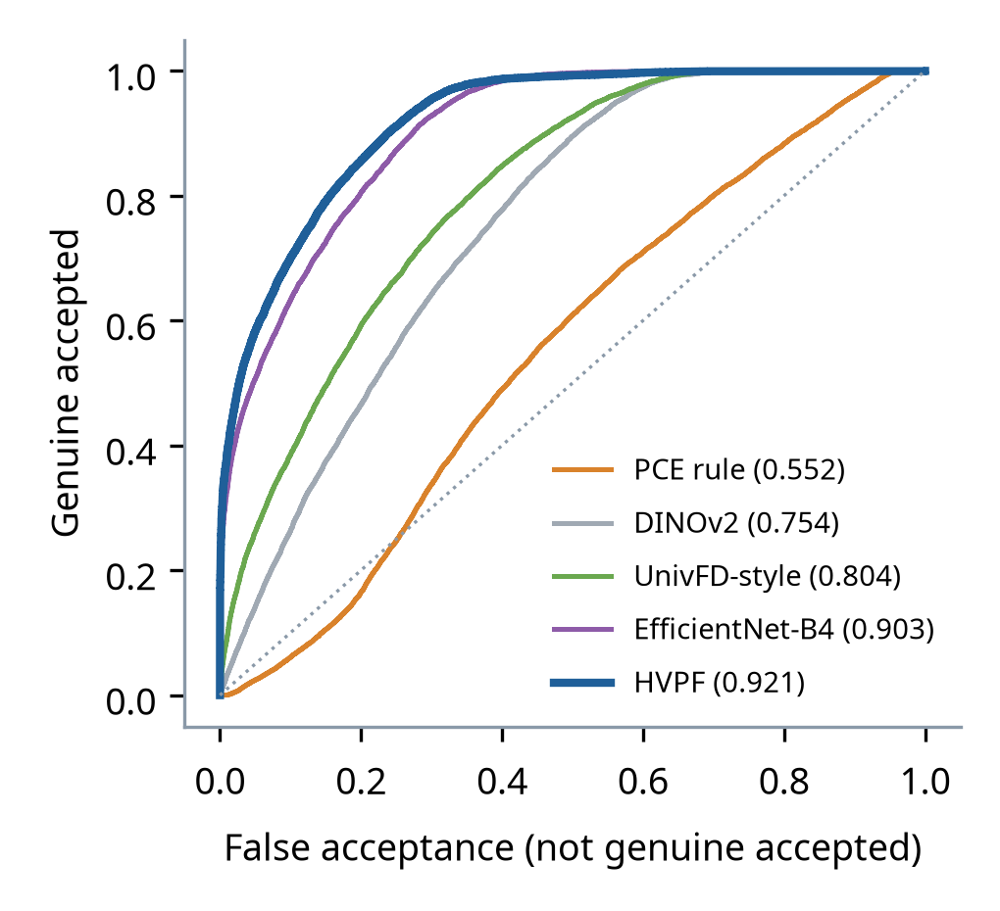
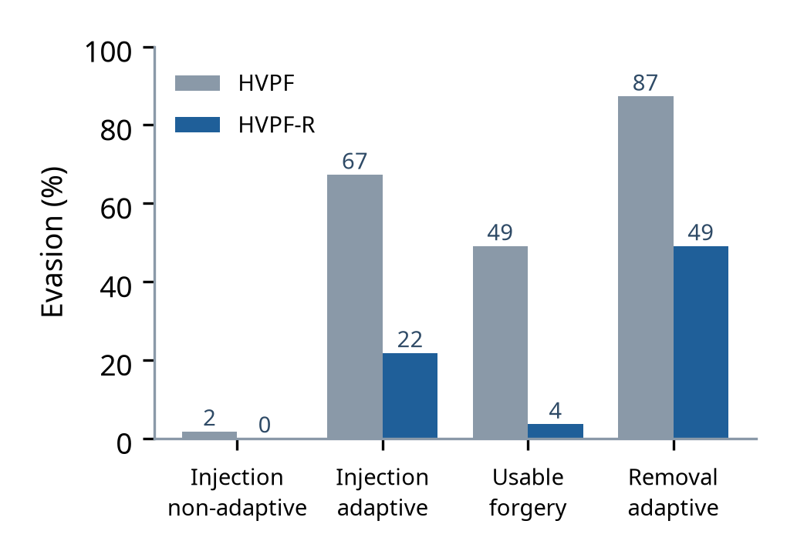

Every test clip (first 10 I-frames, 480×480 centre crop) belongs to one of three classes:
| Metric | What it represents | Better |
|---|---|---|
| Macro F1 | Three-class accuracy summary: the F1 score of each class averaged, so the small genuine class counts as much as the large AI class. Headline number. | higher |
| AUC (genuine vs not) | How well the score ranks genuine clips above everything else, over all thresholds (0.5 = random, 1 = perfect). This is the verification question: "should I trust this clip?" | higher |
| EER | Equal error rate: the operating point where the rate of falsely rejected genuine clips equals the rate of accepted fakes. | lower |
| Genuine accepted % | Real videos correctly called genuine (the true-accept rate). Low means honest users get rejected. | higher |
| Attacks caught % | PRNU-tampered videos correctly flagged as manipulated. | higher |
| AI caught % | AI videos correctly called synthetic. | higher |
| … accepted % | For a type of forgery: how often it is wrongly accepted as genuine. This is the attacker's success rate. | lower |
| p, 95% CI | From a camera-level paired bootstrap (2,000 resamples of whole cameras, same clips for both systems). p < 0.05 means the difference is unlikely to be luck. The minimum reportable value is p = 0.001 (1/2000 resamples, rounded up). * in tables = significant vs HVPF. |
| System | Unseen cameras (42,083 clips) | Unseen datasets (4,716) | ||||||
|---|---|---|---|---|---|---|---|---|
| F1 | AUC | EER | Genuine acc. | Attacks caught | AI caught | F1 | AUC | |
| PCE rule (conventional PRNU check) | – | 0.552 | 0.449 | 22.5 | – | – | – | 0.424 |
| DINOv2 + linear probe | 0.680* | 0.754* | 0.324 | 69.5 | 43.3 | 95.0 | 0.824* | 0.967* |
| UnivFD-style (CLIP ViT-B/16 probe) | 0.726* | 0.804* | 0.283 | 63.4 | 61.5 | 93.8 | 0.790* | 0.935* |
| EfficientNet-B4 (end-to-end) | 0.818* | 0.903* | 0.198 | 76.5 | 71.2 | 98.7 | 0.906 | 0.983 |
| HVPF (ours) | 0.842 | 0.921 | 0.175 | 78.9 | 75.2 | 98.8 | 0.920 | 0.987 |
What it shows.

Figure 1. ROC curves (genuine vs not) on unseen cameras. HVPF sits above every baseline; the PCE rule is near the diagonal.
| System | AI + PRNU (seen generators) | AI + PRNU (unseen generators) | Camera injection α=1 | Camera injection α=0.5 |
|---|---|---|---|---|
| PCE rule (conventional) | 95.8 | 95.8 | 98.5 | 76.2 |
| DINOv2 + linear | 1.2 | 1.7 | 48.2 | 57.5 |
| UnivFD-style CLIP | 0.9 | 0.8 | 15.0 | 22.5 |
| EfficientNet-B4 | 0.1 | 0.3 | 3.4 | 9.4 |
| HVPF (ours) | 0.0 | 0.0 | 0.3 | 4.8 |
Two kinds of comparison are used. (a) Base papers from the thesis proposal: they solve part of our problem, so each is compared on its own task. (b) Re-implemented baselines: standard detectors from the literature, trained and tested by us on exactly the same clips and splits. Only (b) gives a strict head-to-head, which is what reviewers expect.
"Spoofing Camera Source Attribution via PRNU Transfer Attacks on Physical and AI Generated Images", ISC 2025, Springer LNCS, pp. 279–299. doi:10.1007/978-3-032-08124-7_17
What they did: they copied a real camera's PRNU into other images, including AI-generated ones, and showed that source verification accepts 85.5% of them. Images only, attack only, no defence.
How we compare: we apply the same attack to video, using both AI video + injected PRNU and camera-to-camera injection, and measure the acceptance rate.
| Accepted as genuine (lower is better) | Khan et al. (images) | PCE rule (our video) | HVPF Phase 3 | HVPF final |
|---|---|---|---|---|
| AI + injected PRNU, full strength | 85.5% | 95.8–98.1% | 0.1–0.8% | 0.0% |
| Camera-to-camera injection, α = 1 | 85.5% | 97.8–98.5% | 1.2% | 0.3% |
| Camera-to-camera injection, α = 0.5 | – | 69.5–76.2% | 13.8% | 4.8% |
Meaning: we confirm Khan's finding on video (the attack works even better, ~98%), and we provide the defence they did not have.
"PDC-ViT: source camera identification using pixel difference convolution and vision transformer", Neural Computing and Applications 37(9):6933–6949. doi:10.1007/s00521-025-11004-z
What they did: a learned model that names which camera recorded a video. Every camera is seen in training (80/20 split), and testing uses clean videos only.
How we compare: against our camera-identification step (PRNU + trained ViT hybrid, with near-duplicate scenes kept apart). The PDC-ViT numbers are copied from their paper.
| Camera-ID accuracy | PDC-ViT (paper) | HVPF PRNU + ViT |
|---|---|---|
| VISION | 94.3% | 67.4% (all 35 cameras); 88.1% on the 21 with usable PRNU; PRNU alone 100% on non-stabilised |
| Video-ACID | 74.8% | 94.9% |
| FloreView | not tested | 90.1% |
Meaning: camera ID is a side result. It shows PRNU-based attribution works on clean video, which is why the forged-fingerprint attack matters. PDC-ViT never tested attacked or AI video. Caution: the protocols differ and we did not re-run PDC-ViT, so this is not a strict comparison.
"An Anti-Forensics Video Forgery Detection Method Based on Noise Transfer Matrix Analysis", Sensors 24(16):5341.
Bao et al. detect anti-forensic frame deletion using noise statistics, a different manipulation. They report only ROC curves, so they are cited as related work with no numerical comparison. In the thesis (Phase 2) we reported our detector at the same kind of low-false-alarm operating points (41% of fakes caught at 1% false alarms vs the PCE rule's 6%).
| Baseline | Origin and why it is used | How we ran it |
|---|---|---|
| EfficientNet-B4 | The standard deepfake-detection CNN: EfficientNet is the backbone family of the DFDC-winning detectors, and B4 is the variant most used in forensic papers (e.g. Bonettini et al., ICPR 2020) | ImageNet weights, fine-tuned end-to-end on raw I-frames with the same recipe as our ViT; clip score = mean over 10 frames × 4 crops |
| UnivFD-style CLIP | Ojha et al., CVPR 2023, "Towards Universal Fake Image Detectors…": a linear probe on frozen CLIP features, well known for generalising to unseen generators | Frozen CLIP ViT-B/16 frame features, mean over the clip, logistic regression (C chosen on validation cameras) |
| DINOv2 linear | Oquab et al., 2023: a strong general-purpose self-supervised vision backbone, used as a foundation-model baseline | The same with frozen DINOv2-base features |
All three use the same clips, the same 5 camera folds, the same 10 frames and the same unseen-dataset test as HVPF, so every difference in Sections 2–3 comes from the method, and the paired bootstrap p-values are valid.
| Final HVPF vs … | Test | F1 final | F1 other | Δ F1 [95% CI] | p |
|---|---|---|---|---|---|
| Phase 4 (as reported, 5 frames) | unseen cameras | 0.842 | 0.815 | +0.027 [0.022, 0.032] | 0.001 |
| Phase 4, 10 frames | unseen cameras | 0.842 | 0.827 | +0.015 [0.011, 0.019] | 0.001 |
| Phase 4, 10 frames | unseen datasets | 0.920 | 0.902 | +0.018 [0.004, 0.032] | 0.004 |
| Phase 3 (mid-evaluation) | Phase 3's own test clips | 0.854 | 0.852 | +0.002 [−0.014, 0.015] | 0.86 (tie) |
| Phase 3 (mid-evaluation) | unseen datasets | 0.920 | 0.863 | +0.057 [0.034, 0.081] | 0.001 |
Meaning: on the clips Phase 3 was tuned on, the final model ties overall. It accepts more genuine videos (+4.1 points, p = 0.036) and catches fewer attacks (−5.7 points, p = 0.028), a different trade-off. The real gain is generalisation: on data never seen in training, F1 rises from 0.863 to 0.920. The model configuration was chosen on validation data only (validation F1 0.8415 vs test 0.8417), so the result is not tuned to the test set.
| Configuration | F1 | AUC | Drop in F1 |
|---|---|---|---|
| all features | 0.758 | 0.861 | – |
| without Noiseprint++ | 0.710 | 0.814 | −0.048 |
| without temporal consistency (TSNCS) | 0.740 | 0.840 | −0.018 |
| without PRNU | 0.739 | 0.843 | −0.019 |
| without residual stats | 0.751 | 0.858 | −0.007 |
| without FFT | 0.756 | 0.859 | −0.002 |
Meaning: every feature group helps; Noiseprint++ helps most, and PRNU and temporal consistency come next. The XGBoost F1 (0.758) is lower than the full system's (0.842) because this ablation uses the feature classifier alone, without the ViT and the fusion.
| Configuration | F1 unseen cameras | F1 unseen datasets |
|---|---|---|
| hybrid stacking (PRNU, Noiseprint++, residual, FFT, TSNCS, ViT) | 0.827 | 0.902 |
| only + reliability-aware fusion | 0.829 | 0.912 |
| only + processing-matched training | 0.821 | 0.879 |
| only + camera-calibrated PRNU | 0.836 | 0.925 |
| full HVPF (all three) | 0.842 | 0.920 |
Meaning: camera calibration is the biggest single gain. Processing-matched training is slightly negative on its own but helps in combination, and the full system is best on unseen cameras.
| True class | accepted | inconclusive | accused / flagged |
|---|---|---|---|
| genuine (unseen cameras) | 54.7 | 38.2 | 7.2 |
| attacked (unseen cameras) | 6.2 | 36.9 | 56.8 |
| AI (unseen cameras) | 0.1 | 0.7 | 99.2 |
| genuine (unseen datasets) | 73.8 | 19.3 | 6.9 |
| AI (unseen datasets) | 0.0 | 6.8 | 93.1 |
Meaning: instead of forcing a yes/no, uncertain clips go to an "inconclusive" zone for a human examiner. When HVPF does say "genuine", it is almost never wrong (6.2% of attacks, 0.1% of AI). Only ~7% of real videos are wrongly accused. The cost is that 38% of real clips need manual review.
Setup: the attacker knows the system and can query it. For each of 55 target videos (5 test cameras) the attacker tries a grid of attack settings (36 for injection, 24 for removal: fingerprint strength, blending, re-encoding CRF, denoising) and keeps any setting that HVPF accepts. A video counts as broken if any setting gets through. This is a much stronger attacker than the fixed attacks in Sections 2–3.
| System | Clean F1 cameras | Clean F1 datasets | Injection, non-adaptive | Injection, adaptive | Usable forgery | Removal, non-adaptive | Removal, adaptive | 3-zone inj. / rem. |
|---|---|---|---|---|---|---|---|---|
| HVPF | 0.834 | 0.922 | 1.8 | 67.3 | 49.1 | 1.8 | 87.3 | 30.9 / 60.0 |
| HVPF-R (robust) | 0.811 | 0.900 | 0.0 | 21.8 | 3.6 | 1.8 | 49.1 | 1.8 / 20.0 |
| HVPF-R + round 2 (not kept) | 0.792 | 0.929 | 1.8 | 30.9 | 18.2 | 1.8 | 47.3 | 7.3 / 23.6 |
What happened: the attacker found a shortcut. Every training attack had been encoded at CRF 20, so re-encoding at a different CRF let forgeries through.
HVPF-R trains on attacks at CRF 18/23/28. Usable forgeries fall from 49.1% to 3.6% and removal from 87.3% to 49.1%; with the 3-zone rule, the figures fall to 1.8% / 20%.
Exact McNemar tests: 25 videos fixed and 0 newly broken for injection (p = 6×10⁻⁸); 21 fixed and 0 broken for removal (p = 9.5×10⁻⁷).
The cost: clean F1 −0.023 (p = 0.001), and normal attacks caught fall from 73% to 62%. A second hardening round made things worse and is reported as a negative result.

Figure 2. Adaptive-attack success before (HVPF) and after (HVPF-R) compression-diverse training.
150 test clips (50 genuine, 50 attacked, 50 AI) are prepared for upload through the real platforms. Only the originals have been scored so far:
| Class (originals) | Clips | HVPF correct % | HVPF accepted % | HVPF-R correct % | PCE accepts % |
|---|---|---|---|---|---|
| genuine | 50 | 50.0 | 50.0 | 46.0 | 24.0 |
| attacked | 50 | 94.0 | 4.0 | 96.0 | 52.0 |
| AI | 50 | 96.0 | 0.0 | 98.0 | 28.0 |
Meaning: attacks and AI are caught. Genuine clips are accepted only half the time because these originals are re-encoded real videos at CRF 20,
which look like the training attacks (the same weakness Section 8 found). The WhatsApp/YouTube rows are added once the uploads are in
data/paper/real_upload/.
Sources: data/paper/stats.txt, compare.txt, adaptive/summary*.txt, real_upload/summary.txt; tables generated by scripts/paper_tables.py.